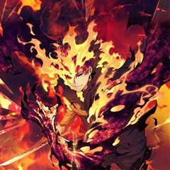
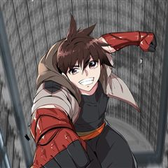
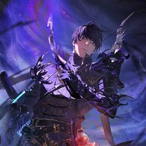
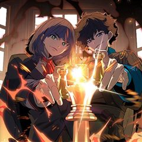
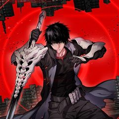

레벨업 못하는 플레이어 같은 웹툰 추천

레벨업 못하는 플레이어 · 앵무새 / 스튜디오 크힛 / 가빈지
레벨업 못하는 플레이어 재밌게 봤다면 이 웹툰들도 좋아할 거예요. 같은 장르이면서 게임판타지, 서스펜스 같은 요소가 겹치는 작품을, 겹치는 요소가 많은 순서로 20개 골랐어요.
2026-10-06 기준 · 네이버웹툰·카카오웹툰·레진코믹스 · 성인 작품 제외
내 취향으로 직접 골라 추천받기 →-
1
 카카오웹툰
카카오웹툰로그인 무림
세상의 경계인 게이트에서 몬스터 사냥을 하는 헌터들이 잘 먹고 잘 사는 시대. 주인공 진태경은 최하위 헌터라 벌이가 시원찮다. 어느 날, 낡은 VR 게임기를 줍게 되고 접속하니 무림의 세계가 펼쳐진다. 우여곡절 끝에 현실로 돌아온 태경은 무림에서 얻…
게임판타지서스펜스판타지액션카카오웹툰에서 보기 → · 로그인 무림 같은 웹툰 → -
2
 카카오웹툰
카카오웹툰픽 미 업!
그 누구도 던전의 끝까지 오르지 못한 극악의 난이도를 자랑하는 모바일 가챠 게임 <픽 미 업!(Pick me up!)> 마스터 오브 마스터라 불리는 세계 랭킹 5위의 마스터 '로키'는 던전을 깨던 중 정신을 잃게 된다. 깨어나 보니 레벨도 1, 등급…
게임판타지판타지액션카카오웹툰에서 보기 → · 픽 미 업! 같은 웹툰 → -
3
 네이버웹툰
네이버웹툰현실퀘스트
게임 아이템을 가져오라는 일진의 협박으로 인해 일주일간 밤샘 게임을 하다 죽음을 맞이한 비운의 게임셔틀 하도완 그 순간 일주일 전 교실에서 리스폰되는데... 모든 것이 그날과 똑같다. 달라진 것은 단 하나, 눈앞에 떠있는 <퀘스트 알림>! 뭐? 내가…
게임판타지판타지액션네이버웹툰에서 보기 → · 현실퀘스트 같은 웹툰 → -
4
 카카오웹툰
카카오웹툰만 년 만에 귀환한 플레이어
어느 날, 갑작스럽게 지옥으로 떨어졌다. 가진 것은 살고 싶다는 갈망과 포식의 권능 뿐. 일천의 지옥부터 구천의 지옥까지. 수만, 수십만의 악마를 잡아먹었고. 마침내 일곱 대공까지 그 앞에 무릎을 꿇었다. "어째서 돌아가려고 하십니까? 왕께서는 이미…
게임판타지판타지액션카카오웹툰에서 보기 → · 만 년 만에 귀환한 플레이어 같은 웹툰 → -
5
 카카오웹툰
카카오웹툰신과 함께 레벨업
이계의 신, 아우터 갓(Outer God). 하늘을 닫는 절망과 늪에 빠진 좌절, 탄생하지 못한 자, 어리석은 혼돈. 평범한 사람들은 그저 바라보는 것만으로 목숨을 잃어 버릴 그 존재들이 세상을 휘젓는 지금… 수 년간의 싸움 끝에, 최후의 생존자들이…
게임판타지판타지액션카카오웹툰에서 보기 → · 신과 함께 레벨업 같은 웹툰 → -
6
 네이버웹툰
네이버웹툰더블클릭
악명 높은 난이도를 가진 게임의 세계 랭킹 1위였던 지호. 서비스 종료된 줄만 알았던 그 게임이 새롭게 돌아왔다! 지호는 다시 한번 랭킹 1위를 꿈꾸며 게임 동아리에 입부한다. 오랜만에 게임을 해도 살아있는 감각. 하지만 게임이 새롭게 변하면서 예상…
게임판타지판타지액션네이버웹툰에서 보기 → -
7
 카카오웹툰
카카오웹툰무림에 떨어진 현대인
생존을 위해 아르바이트를 하는 만년 공시생인 나. 한밤중 배달을 하다 과속하던 차에 쓰러졌다. 뺑소니로 요절했던 죽음의 기억이 강렬한데, ‘……내가 조휘?’ 어느 순간 다 쓰러져 가는 조가철방의 차남이 되었다. 날아가는 새를 떨어뜨릴 권세도, 의지를…
게임판타지판타지액션카카오웹툰에서 보기 → -
8카카오웹툰
만렙부터 레벨업
외공만렙, 내공만렙 강호무림의 명실상부한 천하제일인 차신현. 무공의 끝에 도달하고 지구로 귀환했는데, 어째 뭔가 많이 달라져 있다? 던전에서 몬스터가 튀어나오고 헌터가 상태창으로 레벨을 올리는 세상. '1레벨부터 시작이라고? 아무렴 어떠냐. 이미 내…
게임판타지판타지액션카카오웹툰에서 보기 → -
9

카카오웹툰부서진 성좌의 회귀
한낱 인간에서 신의 위치까지 오른 '신들의 황혼' 흉신으로 위명을 떨치다 신좌, 신앙, 신위...... 모든 걸 잃었다. "짐과 같이 일을 해주었으면 한다." 그럼 그에게 명계의 주, 타나토스가 손을 내미는데.... 그 손을 잡은 '신들의 황혼'은…
게임판타지판타지액션카카오웹툰에서 보기 → -
10

-
11
 네이버웹툰
네이버웹툰강철을 먹는 플레이어
강철대제 이현욱, 인류의 마지막 구원자인 그가 죽었다. 미래를 바꾸기 위해 그가 회귀한 곳은… 군대?!! 왜 하필 여기냐고!” 복수를 위해 특급 성장하는 이현욱 상병의 강철 먹방이 시작된다!
게임판타지판타지액션네이버웹툰에서 보기 → -
12카카오웹툰
이 헌터 실화냐
몬스터'라는 존재가 등장하여 인류를 위협하는 사회. 아무런 예고 없이 등장한 이질적인 존재에 의해 주인공 최강식의 가족은 목숨을 잃게 된다. 가족의 복수를 꿈꾸며 살아가지만, 초능력에 적성이 없는 최강식. 그런 그의 눈앞에 뜬 이질적인 문구. '어떤…
게임판타지판타지액션카카오웹툰에서 보기 → -
13카카오웹툰
엔딩메이커
게임 영웅전기2의 고이다 못해 썩은물인 두 사람. 만년 1등 '아웃복서009'와 만년 2등인 '노란폭풍'. 어느 날, 두 사람은 게임 속에서 눈을 뜨는데……. “야… 너두?” “야… 나두!” 영웅전기2의 결말은 세계의 멸망. 하지만 혼자가 아닌 둘이…
게임판타지판타지액션카카오웹툰에서 보기 → -
14
 네이버웹툰
네이버웹툰세계멸망전
천마, 헌터, 거대 로봇, 마왕, 초인. 각 세계의 존망을 걸고 한자리에 모인 최강자들. 패배의 대가는 오직 세계의 멸망뿐인 생존 전쟁 속, 유일하게 아무런 능력도 없는 '일반 세계' 대표들이 끌려온다. 규격 외 괴물들의 압도적인 무력에 짓밟히기 직…
게임판타지판타지액션네이버웹툰에서 보기 → -
15
 네이버웹툰
네이버웹툰공포 쯔꾸르 생존기
전설의 공포게임 [비현실]을 실행한 순간 게임 속에 갇힌 이현. 한밤중의 학교에서 눈을 뜬 그는 의문의 여고생 다연과 만난다. 이곳에서 살아남는 방법은 단 하나, 섬뜩한 퍼즐을 풀고 숨겨진 규칙을 찾아낼 것. 과연 두 사람은 죽음의 게임을 끝내고 현…
게임판타지서스펜스판타지액션네이버웹툰에서 보기 → -
16

카카오웹툰컨빨
'저는 오늘 이 자리를 빌려 모든 대회와 경기에서 은퇴하려 합니다.' 최강의 격투가라는 권좌에 오른 영민을 기다리던 것은 오로지 지루함뿐이었다. ‘나를 두근거리게 만들 무언가가 필요해!’ 그런 그에게 참지 못 할 도발이 들어온다. ‘권영민 선수‥‥.…
게임판타지판타지액션카카오웹툰에서 보기 → -
17카카오웹툰
아크 더 레전드
게임 `뉴 월드`의 정점에 선 후 고문 이사로 지루한 나날을 보내던 아크, 김현우. 어느 날, 국정원으로부터 `뉴 월드`에서 싸웠던 숙적이자 인공지능 루시퍼가 `뉴 월드` 밖으로 풀려났다는 이야기를 전해 듣는다. 원자력발전소를 무단으로 점거한 루시퍼…
게임판타지판타지액션카카오웹툰에서 보기 → -
18

카카오웹툰랭킹 1위, 방랑자로 전생하다
어느 날 카미모리 켄마는 그가 플레이어의 정점에 서 있던 게임의 세계와 현실이 융합된 곳으로 전이하고 만다. 단 몇 초의 쿨타임에 가로막혀 최종 보스 앞에서 무너졌던 과거. 하지만 그의 손에는 그날의 기억과 희귀 기프트 스킬이 쥐어져 있었다. 지난…
게임판타지판타지액션카카오웹툰에서 보기 → -
19

카카오웹툰몰락한 명가의 플레이어
드레아 대륙의 명가, 세르민가의 막내아들 리윤. 평화롭던 가문은 아버지와 형제들의 실종 이후 몰락의 길로 접어든다. 그리고 모든 것이 무너진 순간, 리윤은 파톤가의 손에 붙잡혀 끔찍한 고문 끝에 생을 마감한다. 하지만 눈을 뜬 곳은 현실이 아닌 끝없…
게임판타지판타지액션카카오웹툰에서 보기 → -
20

카카오웹툰종말 검신 : 최강 각성자의 귀환
종말력 2145년. 변이체의 습격 앞에 인류는 멸망의 벼랑 끝에 내몰렸다. 재앙과 함께 사람들은 이능력에 눈을 떴다. '각성자', 그들만이 인류에게 남은 마지막 희망이었다. 그러나 전세는 끝내 뒤집히지 않았고, 신급 재능을 타고난 요미 시즈키 조차…
게임판타지판타지액션카카오웹툰에서 보기 →